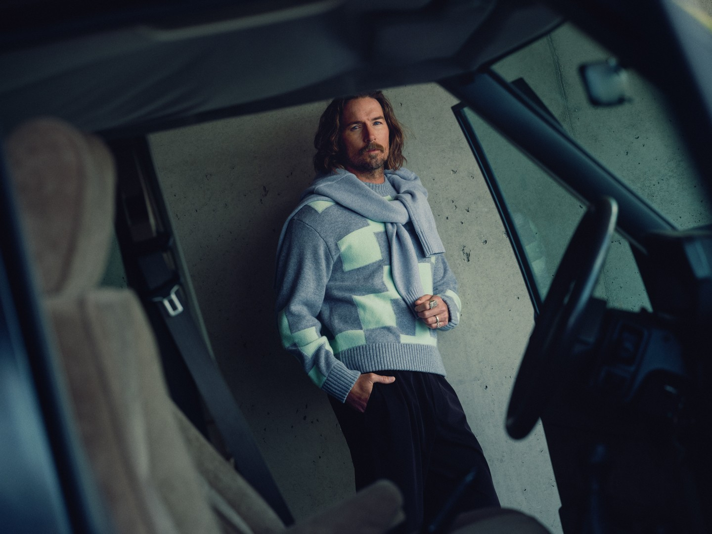
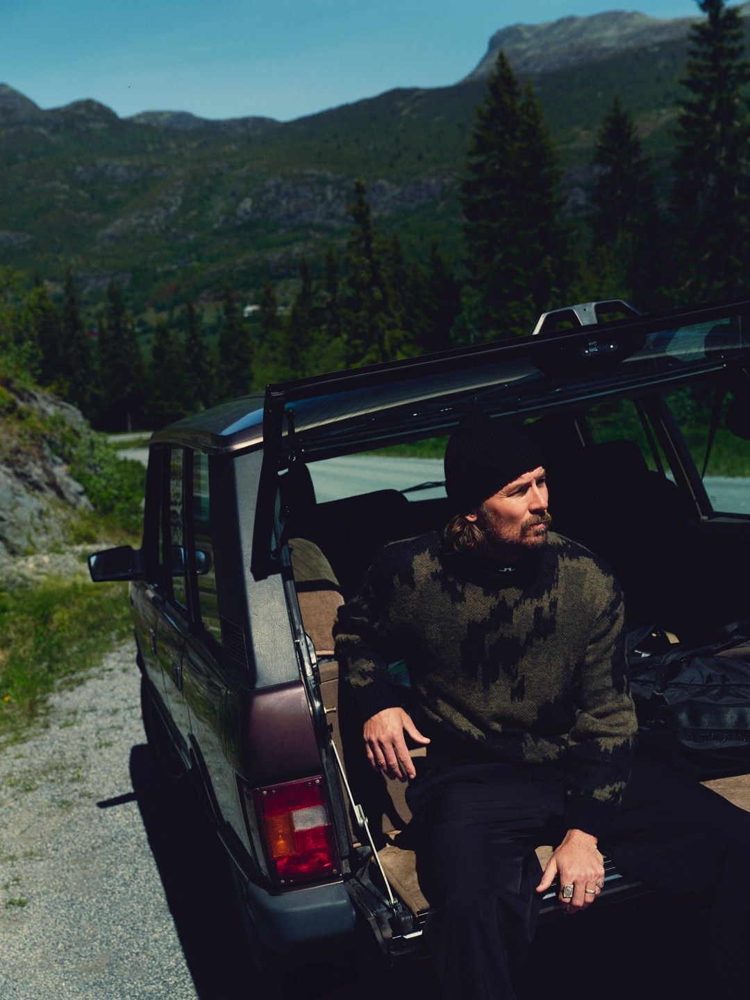
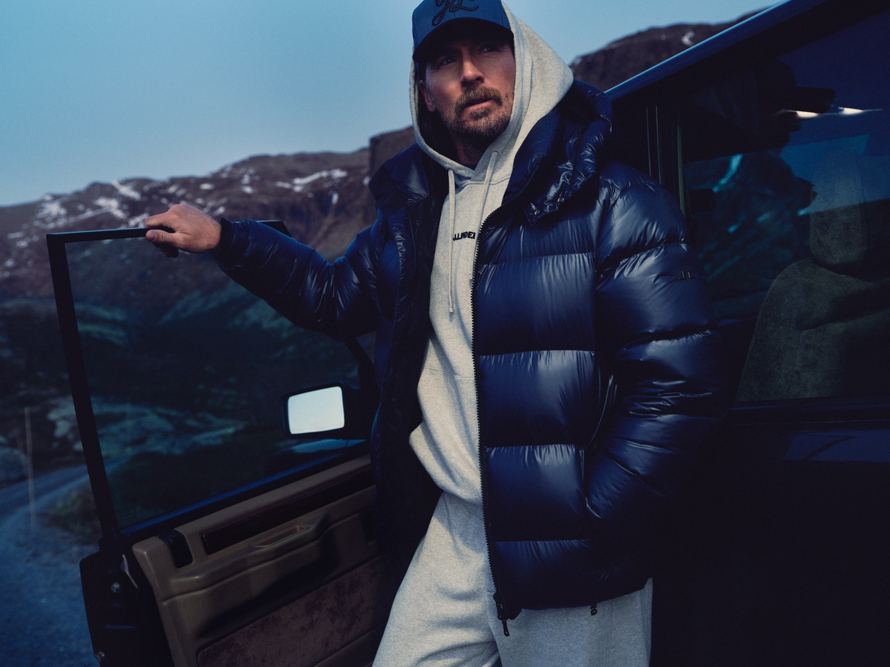
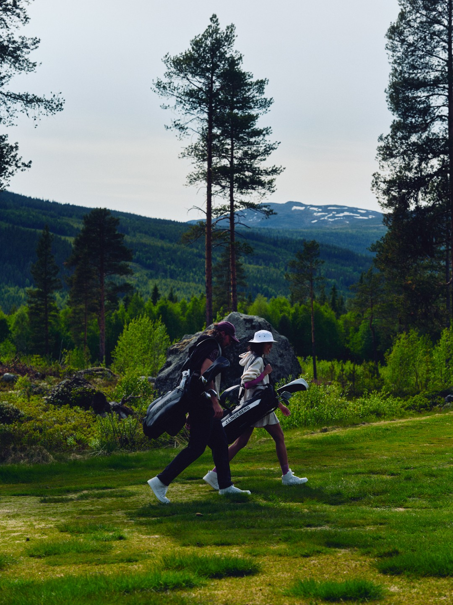
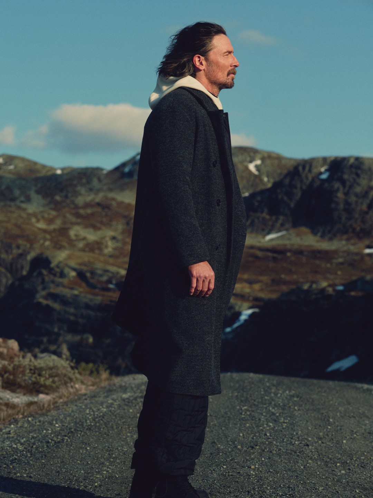
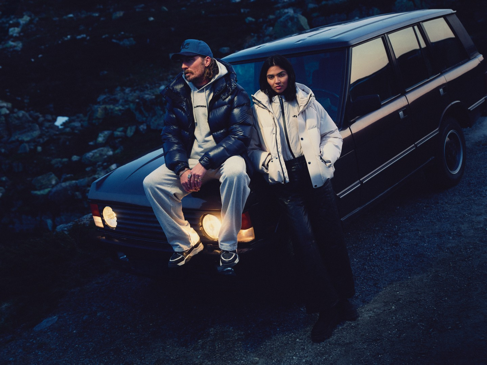

FW25 Campaign “Drive” – J.LINDEBERG
J.LINDEBERG’s FW25 campaign Drive, featuring singer Mark Wystrach and shot in the mountains of Hemsedal, Norway.
I created the concept and led the art direction from initial idea and on-set direction through to final delivery and roll-out.
- Client
- J.LINDEBERG
- Year
- 2025
- Role
- Concept & art direction
- Talent
- Mark Wystrach
- Location
- Hemsedal, Norway
- Photographer
- Theo Cottle
- DOP
- Patrick Pitchler
- Stylist
- Emine Sander
- Production
- BadLand






